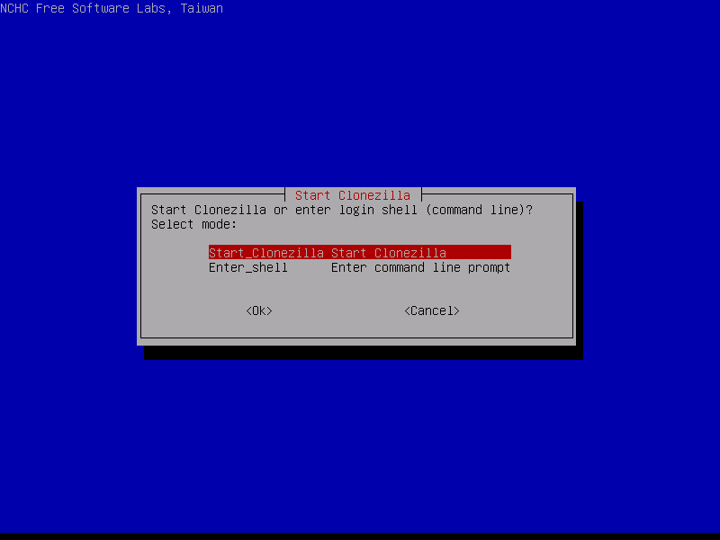
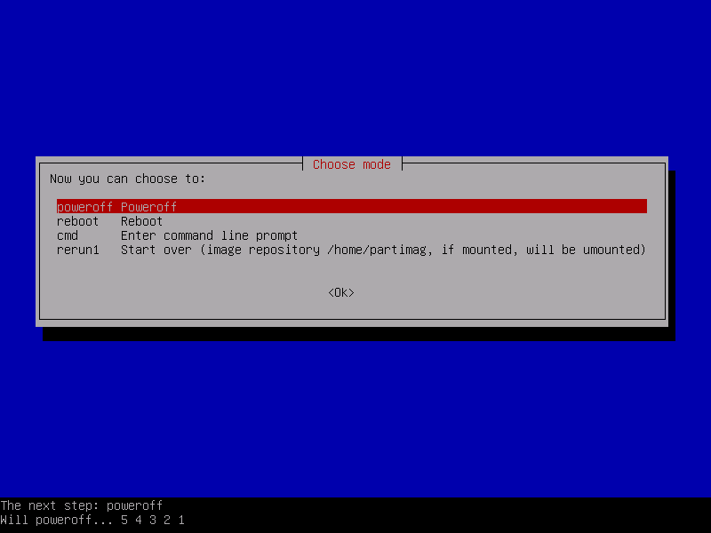
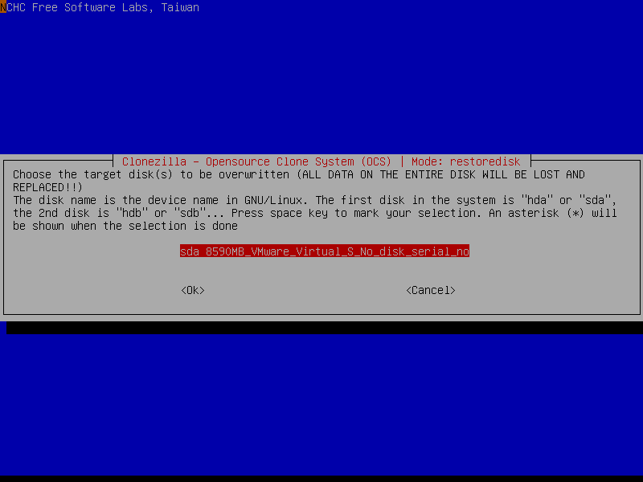

Клонирование диска CloneZilla
Инструкции Обновлено: 14 июля, 2017 26 admin
CloneZilla - это один из лучших инструментов для резервного копирования системы с открытым исходным кодом для Linux. Отсутствие графического интерфейса ничуть не делает его хуже. Наоборот, здесь есть интуитивно понятный, легкий и быстрый мастер командной строки, с помощью которого вы можете сделать все что нужно. Это идеальный инструмент для каждого системного администратора.
С помощью CloneZilla вы можете полностью скопировать раздел жесткого диска на другой жесткий диск и затем его очень просто восстановить. Кроме того, вы можете выполнять резервное копирование clonezilla по сети, с помощью ssh, samba или NFS и сохранять такие образы в локальном хранилище.
В случае возникновения каких-либо проблем, вы можете очень просто восстановить все данные с резервного диска. Например, при поломке системы, если была копия вы сможете развернуть раньше созданный образ и вернуть работоспособность системы в считаные минуты.
В этой статье мы рассмотрим как выполняется клонирование диска CloneZilla, причем нас будут интересовать любые блочные устройства. Неважно что вы будете клонировать раздел или целый жесткий диск, подойдут любые блочные устройства. Дистрибутив тоже неважен, поскольку все будет выполняться с помощью образа LiveCD CloneZilla.
Во-первых, нам нужен образ LiveCD CloneZilla, который можно скачать на официальном сайте. Образ нужно записать на флешку или диск. Я не буду останавливаться на том, как это сделать.
Во-вторых, чтобы выполнить резервное копирование жесткого диска в Linux, нам понадобится еще один физический жесткий диск, подключенный к этой же системе. Причем он должен быть такого же объема или больше, нежели тот диск, который мы хотим скопировать. Для клонирования раздела CloneZilla будет достаточно свободного раздела с таким же размером. Это нужно для записи образа.
Когда все готово, вы можете начать создание образа clonezilla. Мы разделим все действия на шаги, чтобы вам было проще ориентироваться, что нужно делать.
После того как образ LiveCD скачан и записан на флешку, подключите этот носитель к компьютеру и выполните перезагрузку. Во время заставки BIOS нажмите кнопку F11, F12, Del, F2 или Shift+F2, чтобы войти в меню Bios и настройте там загрузку с вашего носителя.
После этого на экране появится загрузчик. В нем выберите первый пункт, чтобы запустить Clonezilla Live со стандартными параметрами и разрешением экрана 800х600. Для выбора нажмите Enter.
Когда система загрузится в оперативную память, появится мастер, в котором вам предстоит выбрать язык системы. Для перемещения по пунктам используйте стрелки вверх/вниз, а для выбора Enter:
На этом экране вы можете настроить раскладку клавиатуры. Просто выберите Do'nt touch keymap и нажмите Enter:
На этом экране можно запустить интерактивный мастер CloneZilla или перейти в консоль. Выберите Start Clonezilla:

Можно выполнять клонирование жесткого диска linux прямо с диска на диск или же с диска на образ. Выберите вариант, который будет вам удобнее, в этой статье мы выберем с диска на диск:
Убедитесь что оба диски подключены к компьютеру, если собираетесь клонировать жесткий диск в Linux.
На следующем экране вы можете выбрать насколько подробно вы хотите настраивать процесс. Для начала выберите режим для начинающих, с настройками по умолчанию. Beginer Mode.
Затем на следующей вкладке выберите что нужно сделать. В нашем случае первый пункт, сохранить диск. Savedisk.
Шаг 8. Выбор режима копирования
Доступно четыре режима клонирования диска:
Если бы мы на шестом шаге выбрали диск на образ, то у нас бы были другие варианты. Мы скопируем наш локальный диск на другой жесткий диск, подключенный к этому компьютеру. Программа выполнить полное клонирование диска Clonezilla, будут скопированы все разделы, а также область MBR или GPT.
На этом шаге мастера нам нужно выбрать диск-источник, который будет использоваться для клонирования. Здесь кроме номера диска в системе (sda,sdb), отображается его имя и серийный номер, поэтому вы сможете выбрать нужный диск без труда.
После выбора диска, нажмите Enter.
Дальше выберите второй диск, на который будет вестись запись. Будьте очень внимательны, потому что программа сотрет все данные на это диске. И если вы ошиблись, получится совсем обратное, от того что планировалось.
Если вы уверены что файловая система не повреждена, можете выбрать пропустить проверку Skip checking:
После этого нужно будет еще раз нажать Enter.
Перед тем как начать резервное копирование, утилита отобразит некоторые сведения о выбранных дисках и своей работе. Вам нужно будет нажать два раза Y:
Дальше, после вашего согласия процесс пойдет автоматически. Все данные с исходного диска (или раздела) будут перенесены на другой раздел без вашего вмешательства.
Во время копирования диска Clonezilla отобразит строку процесса, по которой вы сможете оценить сколько осталось данных и времени.
После того как копирование будет завершено, вам будет предоставлена информация обо всем процессе и результате. Нажмите Enter и в появившемся меню вы можете выбрать что нужно делать дальше. Для выключения выберите poweroff.

Вот и все. В случае поломки, вы можете использовать этот диск вместо поврежденного или при неудачном эксперименте можете восстановить из него все данные. Точно так же само выполняется клонирование раздела и клонирование на образ Clonezilla. Дальше рассмотрим восстановление образа Clonezilla.
Восстановление диска Clonezilla
Начальная загрузка и все шаги по подготовке системы к работе выполняются так же как и для клонирования жесткого диска clonezilla в Linux. Все до шага 7. Только нужно выбрать не disk_to_disk, а disk_to_image, чтобы работать с образами дисков.
Дальше нужно выбрать также режим для начинающих и вариант действия restore disk - восстановить диск или restore parrs для восстановления раздела.
Выбираем откуда будем брать образ, local_dev, локальное устройство:
На этом шаге вам предстоит выбрать образ или диск, из которого будем восстанавливать:

Дальше выберите диск или раздел, на который будут вестись запись:
Осталось несколько раз нажать Y для подтверждения действия и пойдет процесс восстановления.
Вот и все, теперь вы знаете как выполняется резервное копирование clonezilla, а также восстановление из образа clonezilla. После этого вы всегда будете в безопасности и созданная копия может не раз вас спасти от ошибок или неудачных экспериментов с системой. Если у вас остались вопросы, спрашивайте в комментариях!